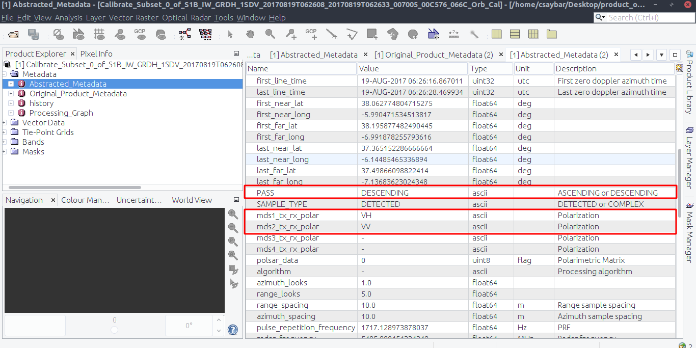

Radar remote sensing assignment
Date: 29 Oktober, 2020
Abstract
This essay explains all the steps involved in pre-processing and analyzing two Sentinel-1 SAR GRD images via SNAP. The SAR images were taken before and after a forest fire in the summer of 2017 in Andalusia, Spain. The results show that the burned area was 12.12 Ha in size.
1 Question N° 01
Find information about flight direction and polarizations in the metadata folderd
In metadata folder we can find the following properties:
- mds1_tx_rx_polar: VH. Transmit/Receive polarization for the data.
- mds2_tx_rx_polar: VV. Transmit/Receive polarization for the data.
- PASS: Direction of the orbit (‘ASCENDING’ or ‘DESCENDING’).
